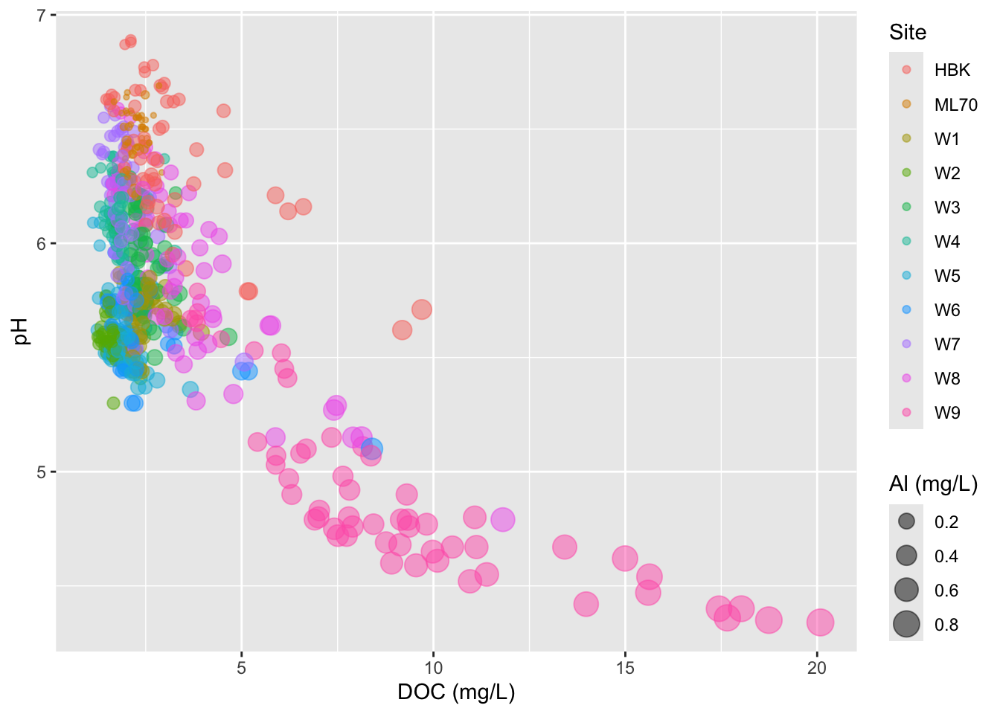
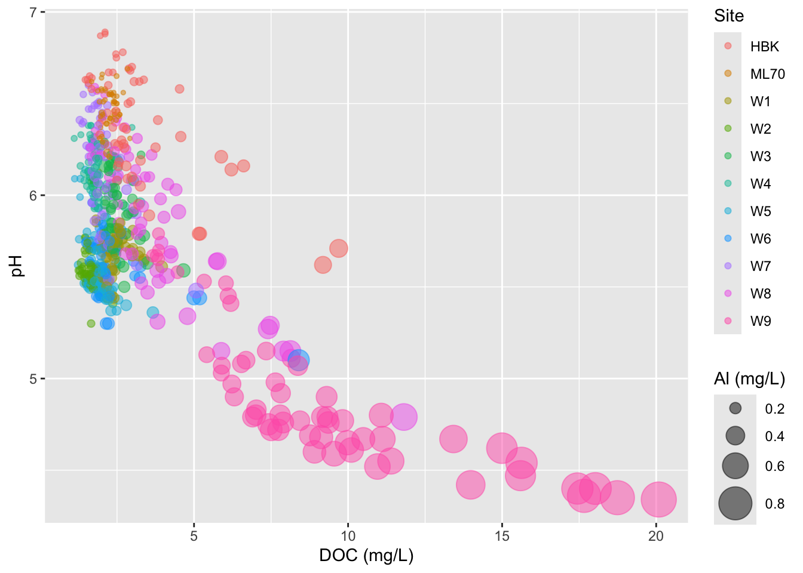
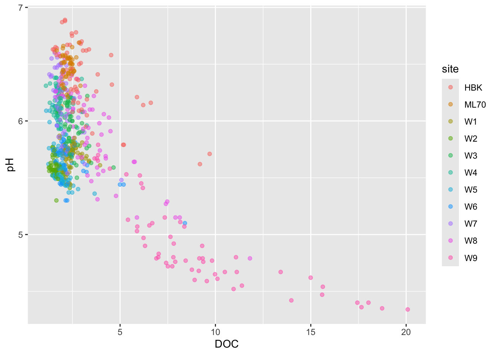
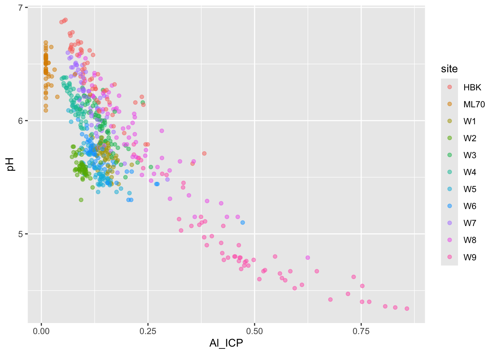
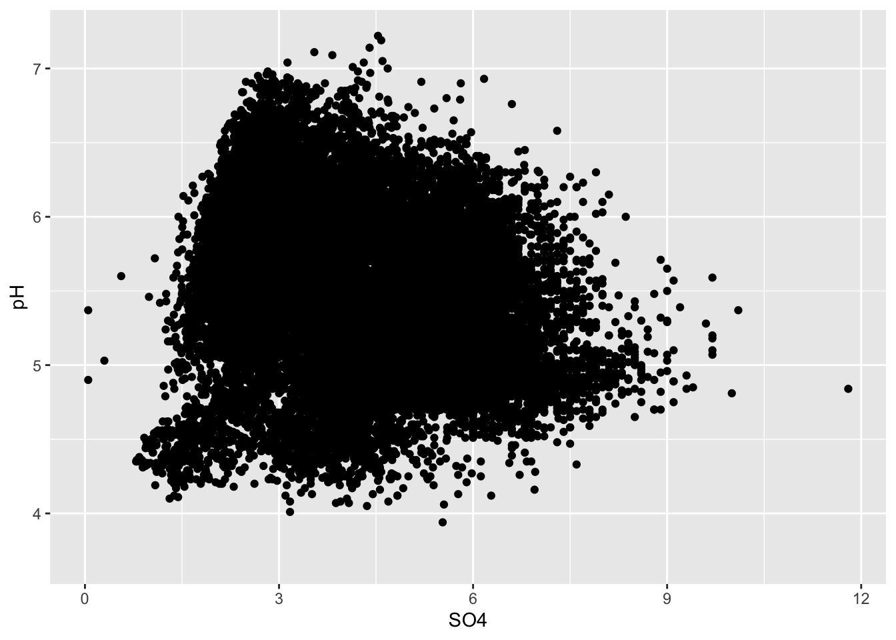
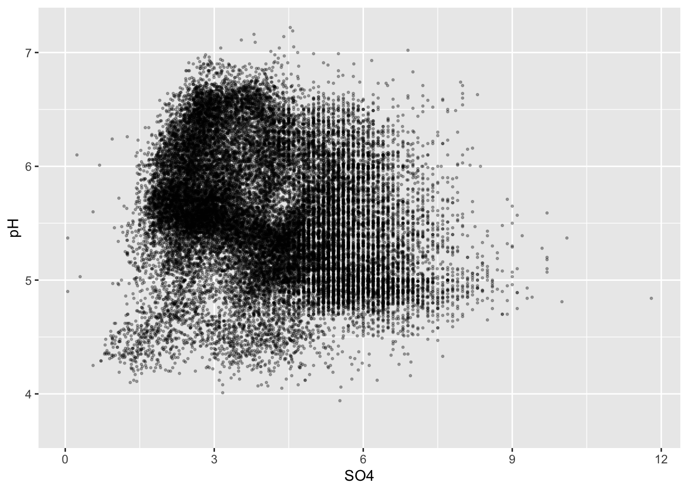
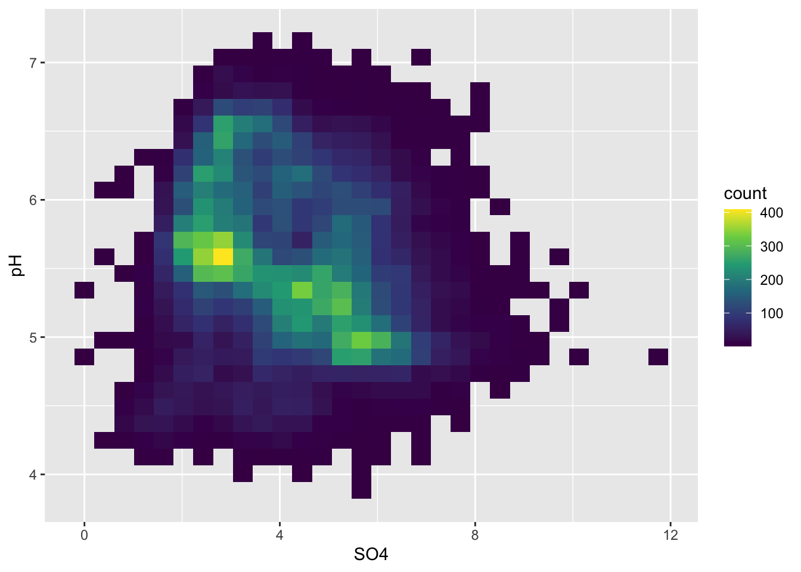

##~~~~~~~~~~~~~~~~~~~~~~~~~~~~~~~~~~~~~~~~~~~~~~~~~~~~~~~~~~~~~~~~~~~~~~~~~~~~~~
## setup ----
##~~~~~~~~~~~~~~~~~~~~~~~~~~~~~~~~~~~~~~~~~~~~~~~~~~~~~~~~~~~~~~~~~~~~~~~~~~~~~~
#..........................load packages.........................
library(metajam)
library(tidyverse)
library(ggExtra)
library(ggdensity)
#...................download data from DataOne...................
# you only need to do this once (then I recommend commenting it out)!
metajam::download_d1_data("https://cn.dataone.org/cn/v2/resolve/https%3A%2F%2Fpasta.lternet.edu%2Fpackage%2Fdata%2Feml%2Fknb-lter-hbr%2F208%2F14%2F024b6acc5cb2e03a14fff5558bbffc0c",
path = here::here("week4"))
# ~ NOTE: You should rename the downloaded folder to 'data/' so that it's ignored by .gitignore! ~
#....................read in downloaded files....................
stream_chem_all <- metajam::read_d1_files(here::here("week4", "data"))
#........................get the data file.......................
#stream_chem_data <- stream_chem_all$data
stream_chem_data <- stream_chem_all$HubbardBrook_weekly_stream_chemistry.csv
Note
This template follows the relationships lecture. Please be sure to cross-reference the slides, which contain important information and additional context!
Setup
Data are downloaded from DataOne (find instructions for getting the download link on the {metajam} package README).
[1] "/Users/samanthacsik/git/EDS-240/EDS-240-Data-Viz.github.io/course-materials/data/lecture/https_pasta_lternet_edu_package_metadata_eml_knb-lter-hbr_208_14__HubbardBrook_weekly_stream_chemistry_1963-2025__csv__copy_18"Scatter plots
Basic scatter plot
Alt 1: add a rug plot

Alt 2: marginal plot alternatives using {ggExtra}
Alt 3: scatter + marginal plot with 2+ groups
#............scatter plot with points colored by site............
p2 <- stream_chem_data |>
dplyr::filter(waterYr == 2021) |>
ggplot(aes(x = DOC, y = pH, color = site)) +
geom_point(alpha = 0.5) +
theme(legend.position = "bottom")
#..................sadd mariginal density plot...................
ggExtra::ggMarginal(p2, type = "density", groupFill = TRUE, groupColour = TRUE)
Trend lines
Default (<1000 data points): LOESS method
- similar to a moving average
Line of best fit
Visualizing a third numeric variable
Bubble charts
- variation of a scatter plot for visualizing a third numeric variable
- be extra mindful:
- primary focus = relationship between your x- and y-axis variables
- hard to compare the strengths of different associations (is there a better alternative graphic form?)
- if the range of values mapped to size is small, your bubbles will look indistinguishable from one another
- consider adjusting the size range of your scale
#..........................bubble chart..........................
stream_chem_data |>
dplyr::filter(waterYr == 2021) |>
ggplot(aes(x = DOC, y = pH, color = site, size = Al_ICP)) +
geom_point(alpha = 0.5) +
labs(x = "DOC (mg/L)", size = "Al (mg/L)", color = "Site")
- adjust size range of bubbles
#.......................scale size by area.......................
stream_chem_data |>
dplyr::filter(waterYr == 2021) |>
ggplot(aes(x = DOC, y = pH, color = site, size = Al_ICP)) +
geom_point(alpha = 0.5) +
scale_size(range = c(1, 10)) +
labs(x = "DOC (mg/L)", size = "Al (mg/L)", color = "Site")- IMPORTANT: don’t scale size by radius (can be deceptive)
#...................don't scale size by radius...................
stream_chem_data |>
dplyr::filter(waterYr == 2021) |>
ggplot(aes(x = DOC, y = pH, color = site, size = Al_ICP)) +
geom_point(alpha = 0.5) +
scale_radius(range = c(1, 10)) +
labs(x = "DOC (mg/L)", size = "Al (mg/L)", color = "Site")
Use color for third variable

But oftentimes best to just create two different plots
#......................effect of DOC on pH.......................
stream_chem_data |>
dplyr::filter(waterYr == 2021) |>
ggplot(aes(x = DOC, y = pH, color = site)) +
geom_point(alpha = 0.5)
#....................effect of DOC on Al_ICP.....................
stream_chem_data |>
dplyr::filter(waterYr == 2021) |>
ggplot(aes(x = Al_ICP, y = pH, color = site)) +
geom_point(alpha = 0.5)

Overplotting
- if you have too many points, scatter plots can be ineffective
#.....................wayyyy too many points.....................
ggplot(stream_chem_data, aes(x = SO4, y = pH)) +
geom_point()
Initial strategies
- adjust size / transparency of points
#................smaller more transparent points.................
ggplot(stream_chem_data, aes(x = SO4, y = pH)) +
geom_point(size = 0.5, alpha = 0.3) 
- add a rug plot (or marginal plot)
#..........................add rug plot..........................
ggplot(stream_chem_data, aes(x = SO4, y = pH)) +
geom_point(size = 0.5, alpha = 0.3) +
geom_rug()
- color by group
Alt 1: 2d heatmaps
- e.g. like you’re looking down on a histogram
#....................heatmap of 2d bin counts....................
ggplot(stream_chem_data, aes(x = SO4, y = pH)) +
geom_bin2d() +
scale_fill_viridis_c()
- or use hexagonal shapes
- also increase height of legend can make continuous scale easier to read
Alt 2: 2d density / contour plots
- e.g. like you’re looking down on a density plot
- legend provides an estimate of the proportion of data points fall within a colored region (density of distribution of points sums to 1)
- interpreting legend: 0-2% of of points fall within a 1x1 square in the darkest blue region, while 26-28% fall within a 1x1 square in the brightest yellow region
Alt 3: 2d density plots using {ggdensity}
- can be easier to interpret
- compute and plot the resulting highest density regions (HDRs)
- HDRs are computed to be the smallest such regions that bound that level of probability